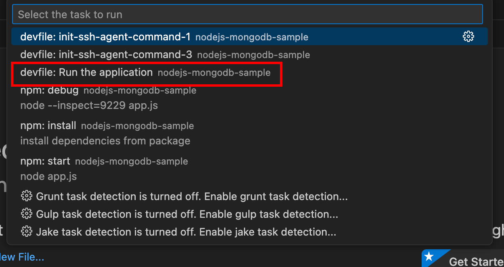
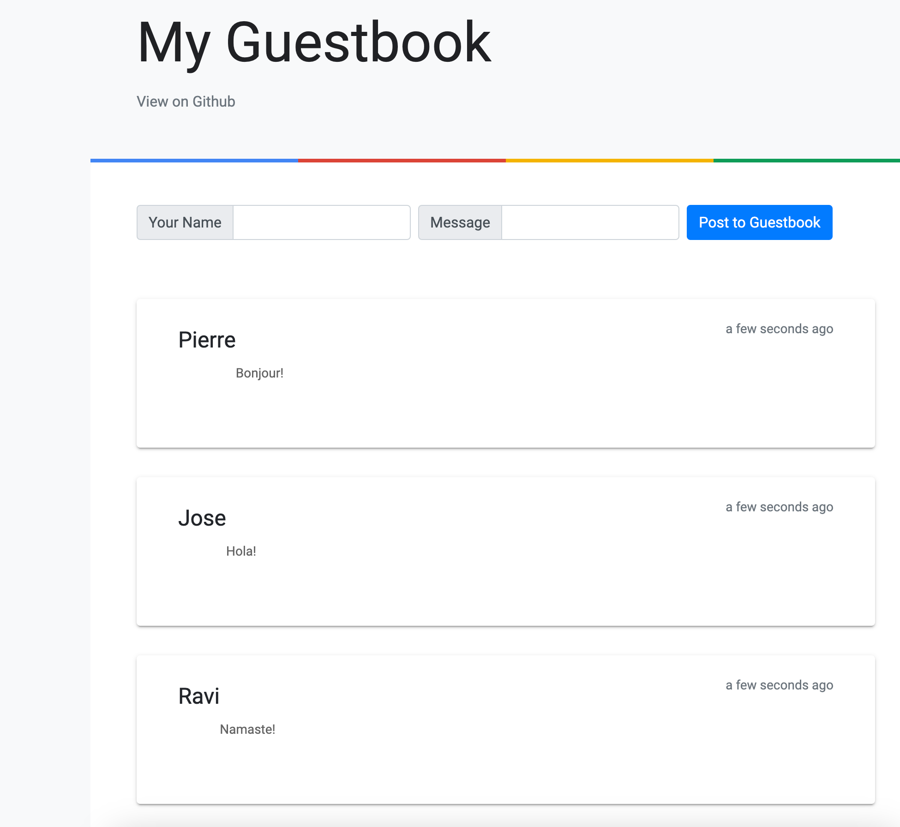

Building Container Images for Dev Spaces
While the Red Hat-provided Universal Developer Image (UDI) provides a convenient base for use in a workspace in many environments, there are cases where you may need to build your own non-UDI base image. For example:
-
The UDI container image is huge (multi-gigabyte). You may wish to use a smaller image.
-
UDI contains compilers, runtimes, and libraries for half a dozen programming languages. You may wish to create a lightweight base image for just your application runtime environment.
-
UDI does not contain support for your application runtime/programming language
-
You deploy very minimal, secure containers in production - and, you wish to retain the same for your developer environment.
Since the UDI is used mainly for development environments, you can simply create a new container image using the UDI as a base (that is, using the FROM directive in the Dockerfile), and then add support for your application. UDI provides a container image with a certain specific configuration that is compliant with Dev Spaces.
If you do not want to use UDI as a base, you must build your own container image in a certain way. Consult the References section for examples. It is highly recommended to use the Red Hat-provided Universal Base Image (UBI) based container images as a starting point for your custom image (Remember that your container image MUST be OpenShift compliant).
Basic Dockerfile and Entrypoint File
Use the following two files as a base to build your image.
This Dockerfile uses ubi-minimal as the base. Replace microdnf with dnf command to install packages if you use the full UBI image.
|
FROM registry.access.redhat.com/ubi8/ubi-minimal:8.10-1086
ARG USER_HOME_DIR="/home/user"
ARG WORK_DIR="/projects"
ENV HOME=${USER_HOME_DIR}
ENV BUILDAH_ISOLATION=chroot
COPY --chown=0:0 entrypoint.sh /
# Note: compat-openssl11 & libbrotli are needed for che-code (Che build of VS Code)
RUN microdnf --disableplugin=subscription-manager install -y openssl compat-openssl11 libbrotli; \
microdnf update -y ; \
microdnf clean all ; \
mkdir -p ${USER_HOME_DIR} ; \
mkdir -p ${WORK_DIR} ; \
chgrp -R 0 /home ; \
chmod +x /entrypoint.sh ; \
chmod -R g=u /etc/passwd /etc/group /home ${WORK_DIR}
WORKDIR ${WORK_DIR}
ENTRYPOINT [ "/entrypoint.sh" ]
CMD [ "tail", "-f", "/dev/null" ]#!/usr/bin/env bash
if [ ! -d "${HOME}" ]
then
mkdir -p "${HOME}"
fi
if ! whoami &> /dev/null
then
if [ -w /etc/passwd ]
then
echo "${USER_NAME:-user}:x:$(id -u):0:${USER_NAME:-user} user:${HOME}:/bin/bash" >> /etc/passwd
echo "${USER_NAME:-user}:x:$(id -u):" >> /etc/group
fi
fi
exec "$@"Lab: Building a Custom Node.js Image for a Workspace
In this hands-on lab, you will build a non-UDI, custom Node.js + MongoDB-based container image for an application using a UBI9-based base image. Instead of using a ubi-minimal base image, you will use the full ubi base image for convenience.
This lab assumes that you have Podman CLI installed and working on your laptop. You will build the container image locally use the resulting image in a Devfile, and then launch and test a workspace based on this image.
-
Download and inspect the
Dockerfilefor the base image at https://github.com/rsriniva/nodejs-mongodb-sample/blob/devspaces-3-rhel-8/Dockerfile. You will use aubi9base image and install thenodejspackage using thednf installcommand.FROM registry.access.redhat.com/ubi9/ubi:9.4-1214.1729773476 ARG USER_HOME_DIR="/home/user" ARG WORK_DIR="/projects" # Set SHELL to configure the default shell used in web terminals # https://github.com/eclipse/che/issues/22524 ENV SHELL=/usr/bin/bash # Set HOME. Required for CRI-o to set /etc/passwd correctly and in general for other CLI tools ENV HOME=${USER_HOME_DIR} ENV BUILDAH_ISOLATION=chroot COPY --chown=0:0 entrypoint.sh / RUN dnf --disableplugin=subscription-manager install -y openssl compat-openssl11 libbrotli nodejs; \ dnf update -y ; \ dnf clean all ; \ mkdir -p ${USER_HOME_DIR} ; \ mkdir -p ${WORK_DIR} ; \ chgrp -R 0 /home ; \ chmod +x /entrypoint.sh ; \ chmod -R g=u /etc/passwd /etc/group /home ${WORK_DIR} WORKDIR ${WORK_DIR} ENTRYPOINT [ "/entrypoint.sh" ] CMD [ "tail", "-f", "/dev/null" ] -
Download and inspect the accompanying
entrypoint.shfile at https://github.com/rsriniva/nodejs-mongodb-sample/blob/devspaces-3-rhel-8/entrypoint.sh.#!/usr/bin/env bash if [ ! -d "${HOME}" ] then mkdir -p "${HOME}" fi if ! whoami &> /dev/null then if [ -w /etc/passwd ] then echo "${USER_NAME:-user}:x:$(id -u):0:${USER_NAME:-user} user:${HOME}:/bin/bash" >> /etc/passwd echo "${USER_NAME:-user}:x:$(id -u):" >> /etc/group fi fi exec "$@" -
Build the container image using the
podmancommand$ podman build --platform linux/amd64 \ -t quay.io/<your_quay_username>/devspaces-ubi9-nodejs . STEP 1/11: FROM registry.access.redhat.com/ubi9/ubi:9.4-1214.1729773476 Trying to pull registry.access.redhat.com/ubi9/ubi:9.4-1214.1729773476... ... STEP 2/11: ARG USER_HOME_DIR="/home/user" --> 3f13beb185fe STEP 3/11: ARG WORK_DIR="/projects" --> c0da750f3117 STEP 4/11: ENV SHELL=/usr/bin/bash --> 1da6d0486920 STEP 5/11: ENV HOME=${USER_HOME_DIR} --> 1b46c2855991 STEP 6/11: ENV BUILDAH_ISOLATION=chroot --> 8402fc79c6bc STEP 7/11: COPY --chown=0:0 entrypoint.sh / --> 5dc9b92cfb47 STEP 8/11: RUN dnf --disableplugin=subscription-manager install -y openssl compat-openssl11 libbrotli nodejs... Dependencies resolved. ... Installed: compat-openssl11-1:1.1.1k-4.el9_0.x86_64 libbrotli-1.0.9-6.el9.x86_64 nodejs-1:16.20.2-8.el9_4.x86_64 nodejs-docs-1:16.20.2-8.el9_4.noarch nodejs-full-i18n-1:16.20.2-8.el9_4.x86_64 nodejs-libs-1:16.20.2-8.el9_4.x86_64 npm-1:8.19.4-1.16.20.2.8.el9_4.x86_64 Complete! ... STEP 9/11: WORKDIR ${WORK_DIR} --> 16f122c900fc STEP 10/11: ENTRYPOINT [ "/entrypoint.sh" ] --> 2424051f7dfe STEP 11/11: CMD [ "tail", "-f", "/dev/null" ] COMMIT quay.io/rsriniva/devspaces-ubi9-nodejs --> 9813c7851f9a Successfully tagged quay.io/<your_quay_username>/devspaces-ubi9-nodejs:latest ... -
If you have a Quay.io account, you can tag your locally built container image and push it to Quay.io. Otherwise, you can use the pre-built container image at https://quay.io/repository/rsriniva/devspaces-ubi9-nodejs in your devfile.
-
Inspect the devfile for the application at https://github.com/rsriniva/nodejs-mongodb-sample/blob/devspaces-3-rhel-8/devfile.yaml. It consists of two container images - the custom Node.js one you built, and a MongoDB image which is used to store application data. You can clone this repository to your own GitHub account if you wish. If you pushed your own custom image to Quay.io, edit the devfile and replace the
components.container.imageattribute and point it to our image. -
Log in to Dev Spaces as
user1. Copy the GitHub URL of the application in theGit repo URLfield, and clickCreate & Open. -
Wait for the workspace to start. If you see an error about post start-up hooks, it means your
Dockerfileis incorrect and does not conform to what Dev Spaces expects. Review and fix the issues in the Dockerfile and rebuild your image. -
Open the
Tasksmenu in VS Code, and run thedevfile: Run the Applicationtask to start the application.Figure 1. Run Node.js/MongoDB App -
You will see a pop-up in the bottom right corner about allowing traffic to port
8080. ClickYesto allow and clickOpen in New Tabto view the application -
Enter some messages in the
GuestBookapplication and verify that your messages are rendered correctly in the application.Figure 2. GuestBook App